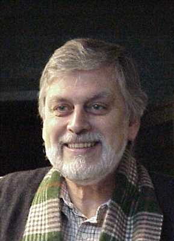

Margarita Mathematica
In memory of José Javier Guadalupe Hernández, Chicho
University of La Rioja Publications Service
Logroño (Spain), Fall of 2001

The Department of Mathematics and Computer Science of the University of La Rioja is asking for mathematical contributions, to be published in a volume honoring the memory of José Javier Guadalupe Hernández, a. k. a. Chicho, Professor of Mathematics at the aforementioned Department, who died in a car accident during a job related trip last April.
The purpose of this volume is to offer his colleagues the opportunity to pay a tribute to his memory, presenting a panorama of the mathematical activity that surrounded him.
With this purpose in mind, we are soliciting contributions to this collective work, from all of those who shared with him years of study and/or of professional activity at the Universities of La Laguna, Zaragoza and La Rioja, as well as those who participated with him in research teams and scientific meetings, such as the Symposia on Orthogonal Polynomials, Real and Complex Analysis Meetings, Harmonic Analysis Conferences, etc. Without forgetting the colleagues who participated in the Mathematics Updating Seminar for High School Teachers, which Chicho organized in Logroño.
Contributions, from one or multiple authors, must have mathematical content. Other than that, all viewpoints or approaches are acceptable. The Editors will decide about publication after making the appropriate scientific consultations. The reception of submissions will be immediately acknowledged, and the decision about acceptance will be communicated to the authors within two months of reception.
The papers, of length between six and twenty pages, should be prepared using standard LaTeX, in article format (packages can be used, in particular, those of the AMS). Black and white drawings, in PostScript and with the standard LaTeX commands, are acceptable. Any technical consultation regarding this issue should be addressed to Juan Luis Varona, at jvarona@dmc.unirioja.es. The volume will be published in spanish, but papers in english may also be accepted.
We should like to have the volume ready at the beginnings of the 2001-02 academic year, so we are asking that contributions be submitted by April 30, 2001. Those received after that date, may also be considered, depending on the status of the publication process.
Logroño, October 6, 2000.
The Editors,
Luis Español González, luis.espanol@dmc.unirioja.esJuan Luis Varona Malumbres, jvarona@dmc.unirioja.es
Dpto. de Matemáticas y Computación
Universidad de La Rioja
Edificio J. L. Vives
Calle Luis de Ulloa, s/n
26004 Logroño, Spain